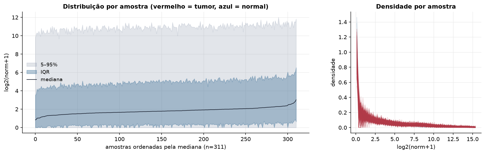
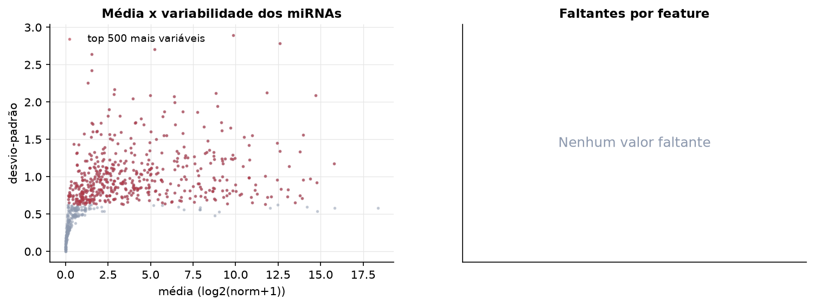
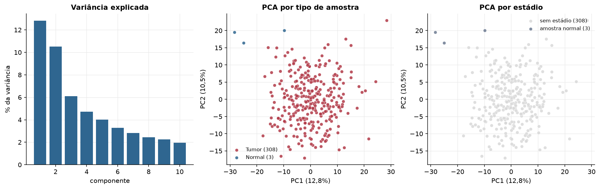
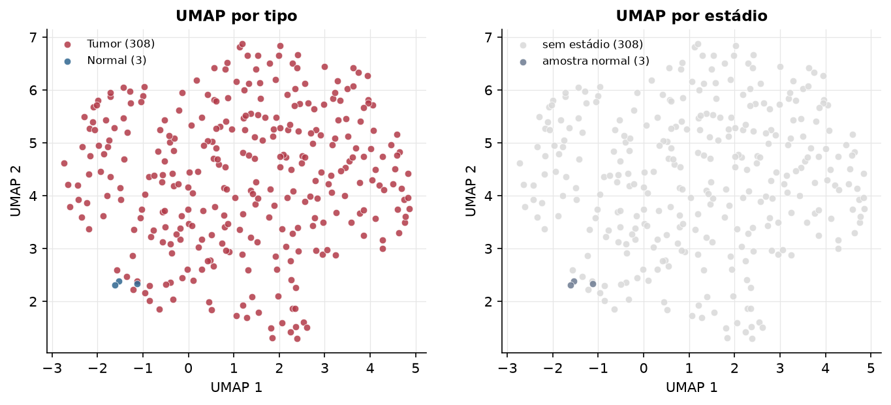
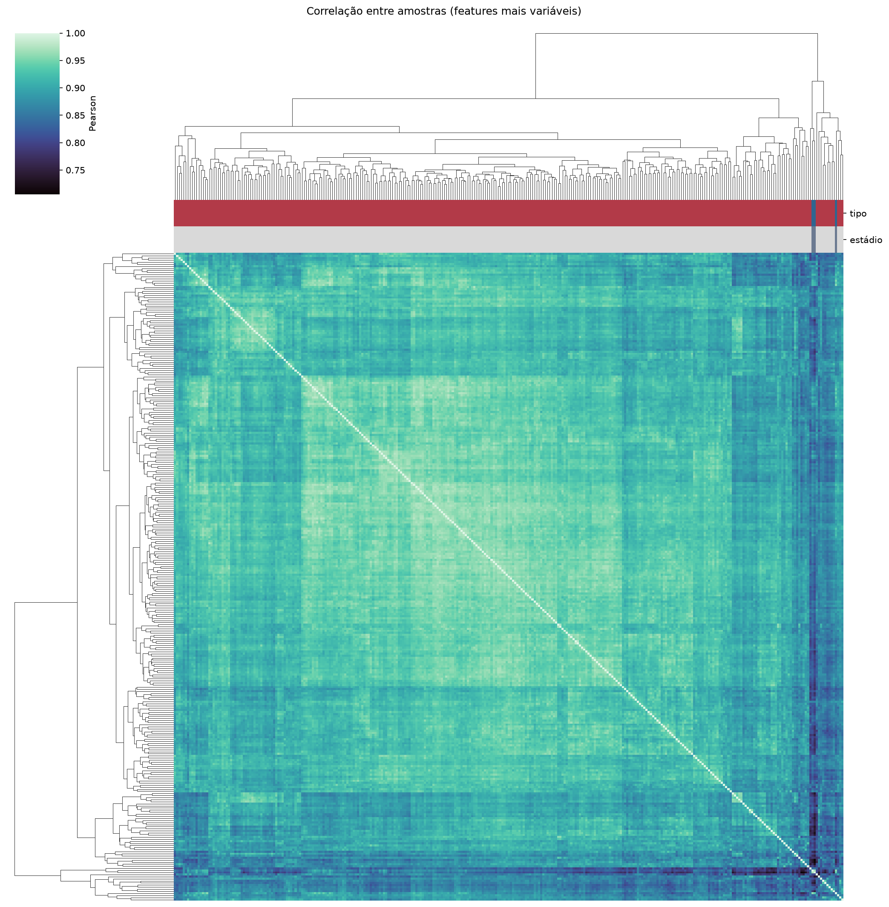
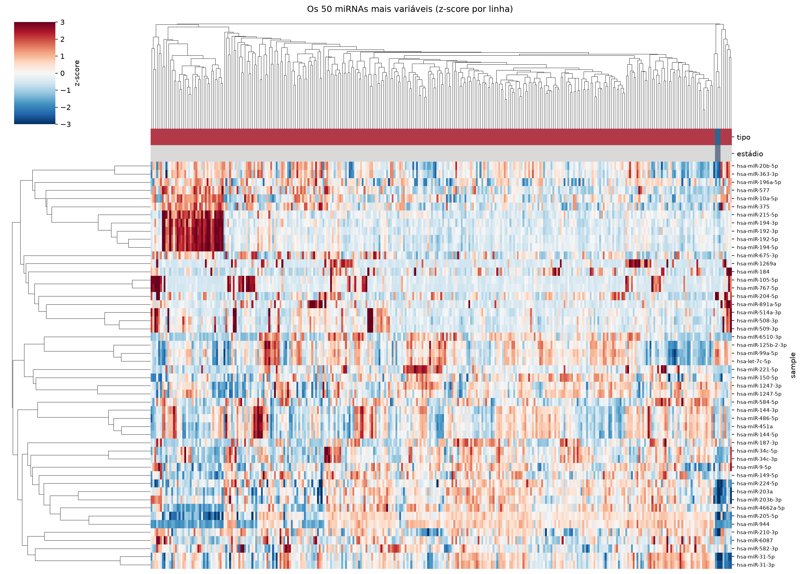
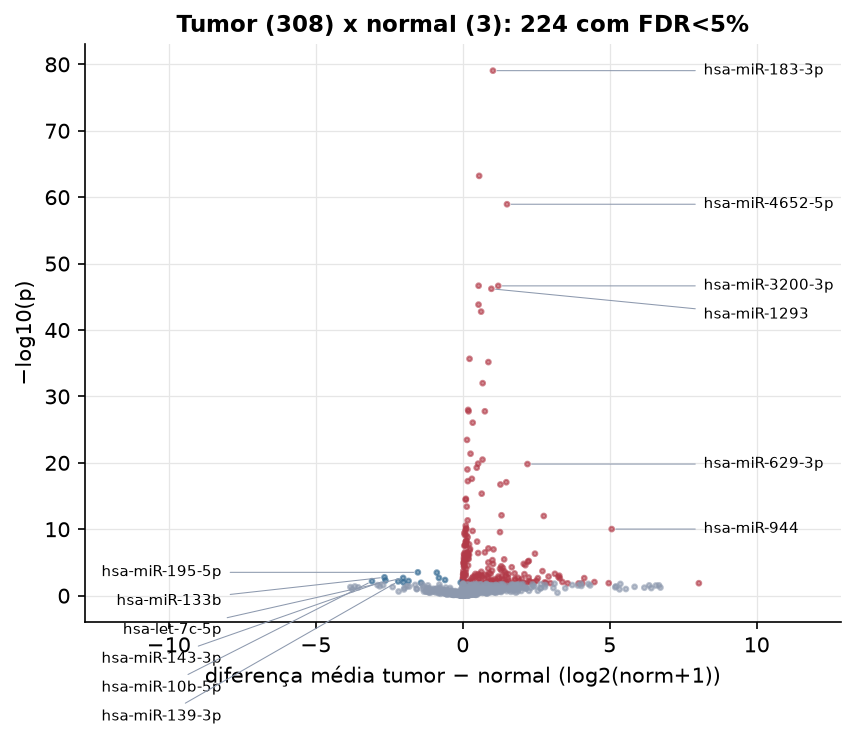
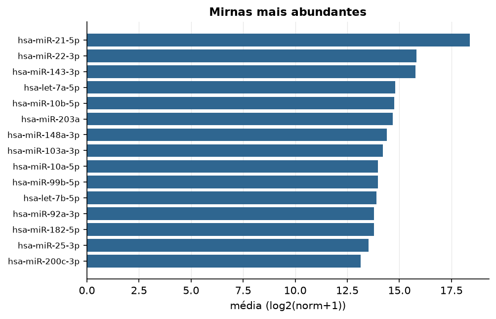

CESC · miRNA-seq (PanCanAtlas)
miRNA maduro, normalizado e corrigido por lote (EB), log2(x+1) · gerado em 21/10/2026 19:59
743miRNAs
308amostras tumorais
3amostras normais
0,0%valores faltantes
Fonte: PanCanAtlas (pancanMiRs_EBadjOnProtocolPlatformWithoutRepsWithUnCorrectMiRs_08_04_16.xena)
Fita madura (5p/3p) já normalizada. As contagens brutas por precursor estão no relatório de contagens.
Principais resultados
- 743 miRNAs medidos em 311 amostras (308 tumorais e 3 normais); 0,0% dos valores estão faltando.
- Os dois primeiros componentes principais explicam 12,8% e 10,5% da variância das features mais variáveis.
- Correlação mediana entre amostras: 0,92.
- Amostras com correlação muito abaixo das demais (possíveis outliers técnicos): TCGA-FU-A3EO-11, TCGA-HM-A3JJ-11, TCGA-HM-A6W2-06, TCGA-VS-A9UT-01.
- Tumor x normal: 224 miRNAs diferentes com FDR < 5% (211 maiores no tumor, 13 maiores no normal; 3 pacientes têm o par tumor-normal).
- Mais aumentados no tumor: hsa-miR-183-3p, hsa-miR-548d-3p, hsa-miR-4652-5p, hsa-miR-7974, hsa-miR-3200-3p, hsa-miR-1293, hsa-miR-18b-3p, hsa-miR-4724-5p.
- Mais reduzidos no tumor: hsa-miR-195-5p, hsa-miR-411-5p, hsa-miR-133b, hsa-miR-28-5p, hsa-let-7c-5p, hsa-miR-411-3p, hsa-miR-143-3p, hsa-miR-381-3p.
- Nenhum dos três primeiros componentes principais se associou a estádio, sexo, idade ou sobrevida com p < 0,05.
Distribuição dos valores


Estrutura das amostras




Tumor x normal

Features mais diferentes entre tumor e normal
| sample | diferenca_tumor_menos_normal | t | p | fdr |
|---|---|---|---|---|
| hsa-miR-183-3p | 1.028 | 26.059 | 8.89e-80 | 6.58e-77 |
| hsa-miR-548d-3p | 0.559 | 21.699 | 6.18e-64 | 2.29e-61 |
| hsa-miR-4652-5p | 1.506 | 20.559 | 1.15e-59 | 2.84e-57 |
| hsa-miR-7974 | 0.54 | 17.329 | 2.16e-47 | 3.34e-45 |
| hsa-miR-3200-3p | 1.208 | 18.215 | 2.26e-47 | 3.34e-45 |
| hsa-miR-1293 | 0.975 | 17.208 | 6.22e-47 | 7.67e-45 |
| hsa-miR-18b-3p | 0.538 | 16.584 | 1.5e-44 | 1.59e-42 |
| hsa-miR-4724-5p | 0.626 | 16.307 | 1.7e-43 | 1.57e-41 |
| hsa-miR-1537-5p | 0.232 | 14.43 | 2.17e-36 | 1.78e-34 |
| hsa-miR-551b-3p | 0.872 | 15.454 | 6.71e-36 | 4.96e-34 |
| hsa-miR-146a-3p | 0.678 | 13.446 | 1e-32 | 6.75e-31 |
| hsa-miR-96-3p | 0.184 | 12.344 | 1.07e-28 | 6.57e-27 |
| hsa-miR-934 | 0.753 | 12.286 | 1.73e-28 | 9.24e-27 |
| hsa-miR-489-3p | 0.198 | 12.284 | 1.75e-28 | 9.24e-27 |
| hsa-miR-584-3p | 0.34 | 11.807 | 8.94e-27 | 4.41e-25 |
| hsa-miR-6503-3p | 0.146 | 11.068 | 3.5e-24 | 1.62e-22 |
| hsa-miR-4758-3p | 0.265 | 10.46 | 4.22e-22 | 1.84e-20 |
| hsa-miR-449a | 0.674 | 10.194 | 3.28e-21 | 1.35e-19 |
| hsa-miR-1224-5p | 0.524 | 10.011 | 1.34e-20 | 5.21e-19 |
| hsa-miR-629-3p | 2.203 | 36.336 | 1.52e-20 | 5.63e-19 |
| hsa-miR-6718-5p | 0.476 | 13.197 | 5.37e-20 | 1.89e-18 |
| hsa-miR-3667-5p | 0.159 | 9.747 | 9.86e-20 | 3.32e-18 |
| hsa-miR-548f-3p | 0.311 | 9.31 | 2.53e-18 | 8.15e-17 |
| hsa-miR-3161 | 0.173 | 9.2 | 5.69e-18 | 1.75e-16 |
| hsa-miR-1269a | 1.482 | 9.481 | 8.3e-18 | 2.46e-16 |
| hsa-miR-6087 | 1.282 | 12.871 | 1.82e-17 | 5.19e-16 |
| hsa-miR-122-5p | 0.646 | 8.593 | 4.36e-16 | 1.2e-14 |
| hsa-miR-3943 | 0.106 | 8.337 | 2.6e-15 | 6.87e-14 |
| hsa-miR-1250-5p | 0.102 | 8.288 | 3.63e-15 | 9.27e-14 |
| hsa-miR-129-1-3p | 0.137 | 7.936 | 3.93e-14 | 9.7e-13 |
Associação com variáveis clínicas
p-valores da associação dos três primeiros componentes principais (só tumores) com estádio (Kruskal-Wallis), sexo (Mann-Whitney), idade (Spearman) e sobrevida global (Cox univariado).
| estádio (Kruskal) | sexo (Mann-Whitney) | idade (Spearman) | sobrevida OS (Cox) | |
|---|---|---|---|---|
| PC1 (12,4%) | 0.549 | 0.109 | ||
| PC2 (10,0%) | 0.288 | 0.863 | ||
| PC3 (6,2%) | 0.562 | 0.943 |
Mais abundantes
